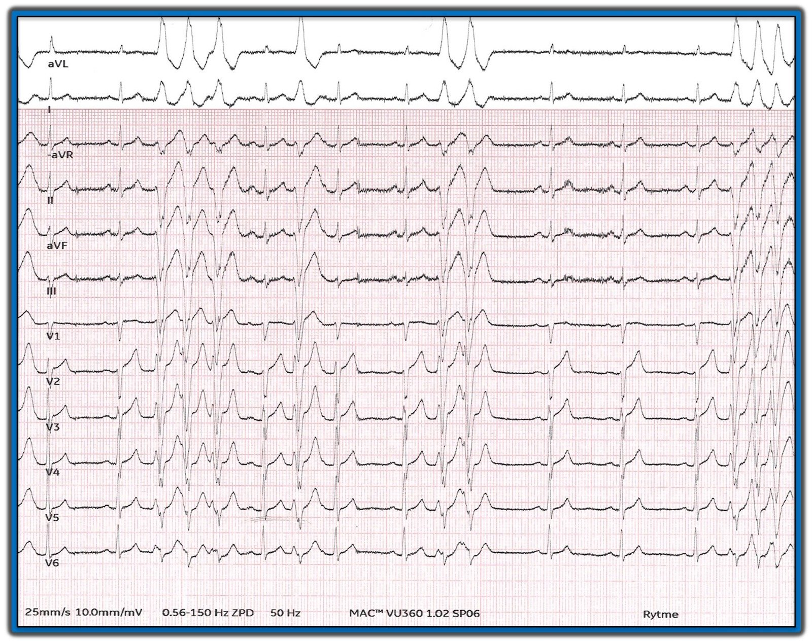
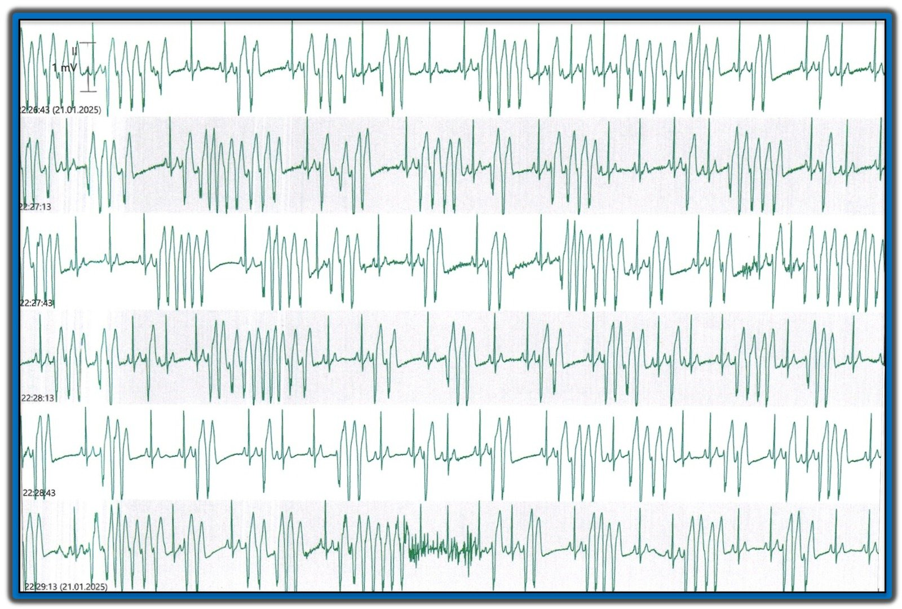
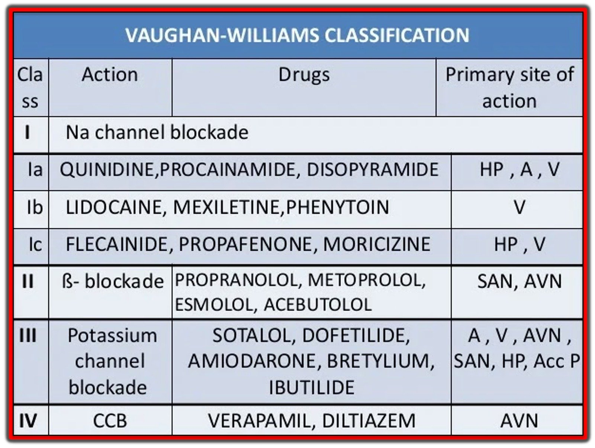
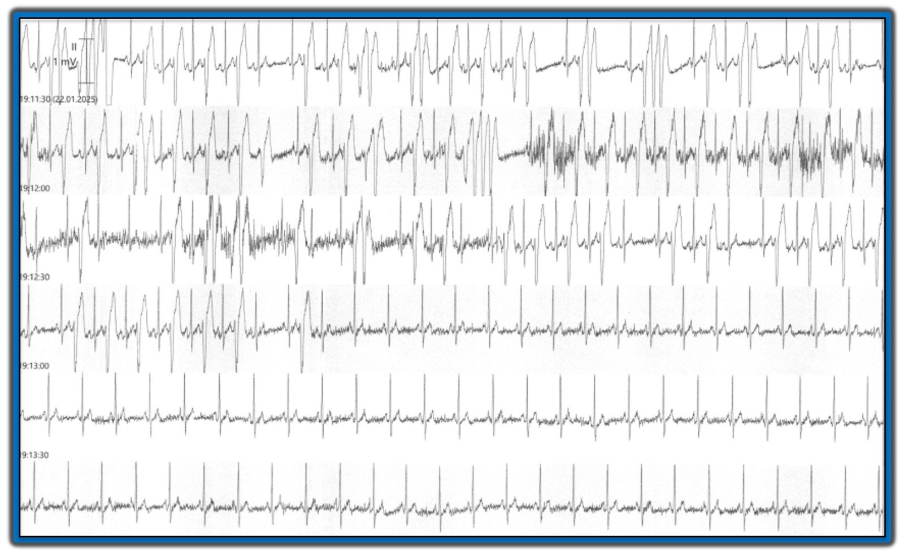
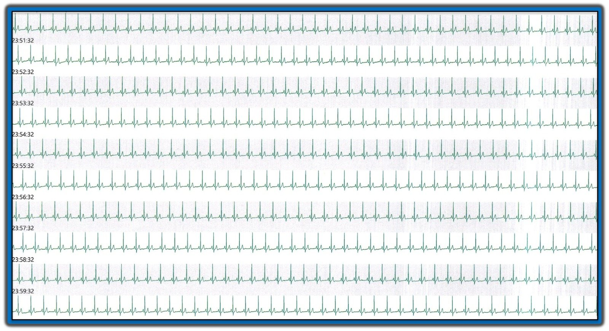
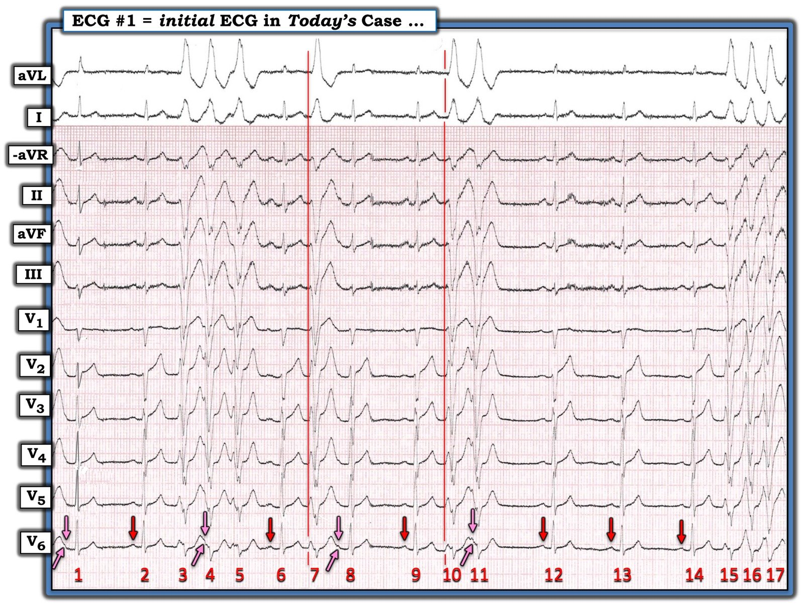
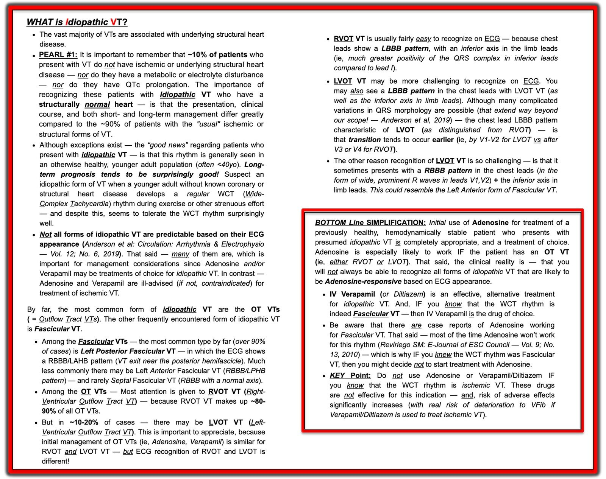

06/02/2025 — Bất ổn điện học ở một người 50 tuổi khỏe mạnh. Xử trí thế nào?
Bản dịch tiếng Việt của bài "Electrical instability in a healthy 50 year old. How to manage?" – Dr. Smith’s ECG Blog. Giữ nguyên toàn bộ 8 hình ảnh của bản gốc.
Bài viết của Magnus Nossen
(kèm 2 bình luận quan trọng của Smith ở cuối bài)
Bệnh nhân trong ca hôm nay là một nam giới 50 tuổi đến viện vì “chóng mặt” và các cơn tiền ngất.
- Triệu chứng của bệnh nhân bắt đầu khoảng 14 ngày trước khi nhập viện — nhưng nặng lên đáng kể trong 24 giờ vừa qua.
- Trước đây khỏe mạnh, không dùng thuốc gì và tập thể dục đều đặn.
- Không có triệu chứng đau thắt ngực, không triệu chứng khi gắng sức thể lực.
Dưới đây trong Hình 1 là điện tâm đồ lúc nhập viện của bệnh nhân này. Bạn sẽ xử trí bệnh nhân này như thế nào?


Diễn giải: Điện tâm đồ 12 chuyển đạo này cho thấy nhịp xoang tần số 65 nhịp/phút với PVC đơn ổ thường xuyên. Các nhát dẫn truyền từ xoang có khoảng PR bình thường, QRS hẹp, với ST chênh lên nhẹ ở V2. Hình dạng ST chênh lên này có vẻ lành tính. QTc bình thường. Đáng chú ý là có nhiều ngoại tâm thu thất (PVC). Các nhát lạc chỗ có thể thấy đứng riêng lẻ, thành cặp đôi và thành các loạt ngắn 3 nhát.
Các PVC có hình dạng giống LBBB ở các chuyển đạo trước tim đầu. Trục QRS hướng lên trên và về phía vai trái. (tức là phức bộ QRS âm ở các chuyển đạo dưới — và dương ở chuyển đạo I và aVL). Trục và hình dạng của các PVC phù hợp với nguồn gốc của các nhát thất sớm ở đâu đó gần mỏm thất phải. Trục này không phù hợp với các nhát lạc chỗ từ RVOT, vốn phải có trục hướng xuống dưới. Đáng chú ý là hình dạng PVC thay đổi nhẹ từ nhát này sang nhát khác (sẽ bàn thêm ở phần sau của bài).
PVC xuất phát từ thất phải sẽ có hình dạng QRS giống LBBB ở các chuyển đạo trước tim — trong khi PVC từ thất trái sẽ có hình dạng giống RBBB.
Bất cứ khi nào tôi thấy PVC có hình dạng và trục như trong ca hôm nay — tôi luôn tìm dấu hiệu của AC (bệnh cơ tim gây loạn nhịp — Arrhythmogenic Cardiomyopathy). Bệnh cơ tim gây loạn nhịp thường biểu hiện bằng PVC từ thất phải. Tuy nhiên, điện tâm đồ trong Hình 1 không cho thấy dấu hiệu nào của bệnh cơ tim gây loạn nhịp. Xem ca này để có bàn luận sâu về AC và một ví dụ về VT cùng các thay đổi điện tâm đồ liên quan đến bệnh lý này.
- Trong thời gian theo dõi tại khoa cấp cứu (ED), bệnh nhân có nhiều cơn nhịp nhanh thất đơn dạng không bền bỉ (NSVT) tự kết thúc.
- Đã tiêm tĩnh mạch nhiều liều bolus metoprolol nhưng không có tác dụng gì lên các nhát lạc chỗ thất. Nồng độ kali và magnesi huyết thanh bình thường.
- Siêu âm tim tại giường gặp khó khăn chỉ vì các nhát lạc chỗ quá thường xuyên — nhưng không phát hiện bệnh lý nào.
- Đã thêm một liều bolus amiodarone 150mg tĩnh mạch vào metoprolol tĩnh mạch mà không có tác dụng gì. Sau đó, bắt đầu truyền tĩnh mạch amiodarone 1200mg/24 giờ.
Hình 2 dưới đây là bản ghi liên tục một dải nhịp dài chuyển đạo II. Có 6 dòng, mỗi dòng dài 30 giây. Mỗi dòng nối tiếp ngay với dòng bên dưới. Bản ghi tạo thành một dải nhịp dài 3 phút. Bản ghi này thu được sau điều trị ban đầu bằng thuốc chẹn ß tĩnh mạch, amiodarone và magnesi sulfat.


Qua Hình 2 có thể thấy rõ điều trị cho đến thời điểm này không đạt hiệu quả mong muốn. Ngược lại, tần suất và thời gian các cơn VT còn tăng lên (!) bất chấp điều trị. Bệnh nhân liên tục chóng mặt, và các PVC cũng như các cơn NSVT đi kèm với mạch rất yếu trên đường đo huyết áp động mạch xâm lấn.
Làm thế nào để ổn định bệnh nhân này? Biện pháp tiếp theo của bạn là gì?
Bạn đã cho MgSO4 tĩnh mạch — một thuốc chẹn ß tác dụng nhanh — cùng amiodarone tĩnh mạch liều bolus và truyền duy trì.
- Phải cân nhắc khả năng rối loạn nhịp thất do nguyên nhân thiếu máu cục bộ! Dù vậy — không có triệu chứng lâm sàng hay dấu hiệu điện tâm đồ nào gợi ý thiếu máu cục bộ đang diễn ra. Troponin T âm tính lúc nhập viện và ở lần lấy máu lại.
Vì vậy — cần một cách tiếp cận khác. Có 2 lựa chọn chính:
- Có thể cân nhắc tạo nhịp vượt tần số (overdrive pacing) — và trong tình huống lâm sàng phù hợp, biện pháp này thường hiệu quả để giảm rối loạn nhịp thất (đặc biệt trong trường hợp phòng ngừa rối loạn nhịp do khoảng ngưng hoặc do nhịp chậm gây ra, kết hợp với QTc kéo dài).
- Thử một loại thuốc chống loạn nhịp khác. Đây là điều đã được làm trong ca hôm nay. Những chi tiết phức tạp của các nhóm thuốc chống loạn nhịp khác nhau và cơ chế tác dụng của chúng vượt ra ngoài phạm vi của blog này. Tôi chỉ giới hạn ở phần tổng quan tóm tắt trong Hình 3 về các thuốc chống loạn nhịp và vị trí tác dụng chính của chúng.


Ca bệnh tiếp diễn:
Đã quyết định thử một thuốc chẹn kênh natri tác dụng chủ yếu lên cơ tim thất. Chọn đường tĩnh mạch để thuốc khởi phát tác dụng nhanh.
- Lidocaine tĩnh mạch được tiêm bolus 100 mg, sau đó truyền liên tục. Vài phút sau khi tiêm bolus, không còn NSVT nữa! Thực tế, sau khi tiêm xong bolus — hầu như không còn PVC nào.
Bệnh nhân được tiếp tục truyền lidocaine tĩnh mạch đến sáng hôm sau thì ngừng. Kế hoạch là thử flecainide nếu triệu chứng tái phát. Nếu thành công, thuốc này dễ dùng hơn nhiều dưới dạng đường uống.
- Bệnh nhân không có PVC trong nhiều giờ sau khi ngừng lidocaine.
- Siêu âm tim được thực hiện và hoàn toàn bình thường.
Khoảng 10 giờ sau khi ngừng truyền lidocaine — nhiều PVC và các cơn NSVT xuất hiện trở lại, tăng lên rất nhanh trong một khoảng thời gian ngắn.
- Bệnh nhân được dùng liều nạp 100mg flecainide tĩnh mạch.
Dưới đây trong Hình 4 là dải nhịp ghi ngay sau khi bắt đầu truyền flecainide tĩnh mạch. Một lần nữa, có 6 dòng, mỗi dòng dài 30 giây. Mỗi dòng nối tiếp ngay với dòng bên dưới.


Sau khi bắt đầu truyền flecainide — PVC và NSVT gần như chấm dứt ngay lập tức và hầu như hoàn toàn!
- Bệnh nhân được chuyển sang flecainide đường uống. Từ đó đến nay bệnh nhân không còn PVC.
- Dưới đây trong Hình 5 — là bản ghi liên tục chuyển đạo II trong 10 phút khi đang dùng flecainide đường uống, giờ cho thấy nhịp chậm xoang mà không có một PVC nào!


Bệnh nhân được khảo sát nhằm tìm nguyên nhân gây rối loạn nhịp thất.
- Như đã nêu ở trên — siêu âm tim hoàn toàn bình thường.
- Chụp CT mạch vành cho thấy RCA thiểu sản và LCx ưu thế. Không có mảng xơ vữa hay chỗ hẹp.
- Khi rối loạn nhịp đã được kiểm soát — tiến hành chụp MRI tim. MRI hoàn toàn bình thường, không có ngấm thuốc sớm hay muộn và không có dấu hiệu nào của bệnh cơ tim gây loạn nhịp.
- Bệnh nhân đã được lên lịch làm thủ thuật triệt đốt PVC. Nhiều khả năng bệnh nhân này có một dạng nào đó của nhịp nhanh thất vô căn.
Nhịp nhanh thất vô căn:
Nhịp nhanh thất vô căn xảy ra ở bệnh nhân có tim bình thường về cấu trúc — khi không có nguyên nhân xác định nào khác như bệnh kênh ion hay bệnh cơ tim.
- Có nhiều loại VT vô căn khác nhau, trong đó nhịp nhanh thất đường ra (OT-VT) là thường gặp nhất. Trong các nhịp nhanh đường ra thất — (RVOT-VT) chiếm 80-90%.
- Tuy nhiên, VT vô căn không chỉ giới hạn ở các nhịp nhanh đường ra — vì nó có thể xuất phát từ các vị trí khác trong cơ tim hoặc hệ thống dẫn truyền. Danh sách này rất dài và bao gồm (nhưng không giới hạn ở) VT phân nhánh (fascicular VT), VT vòng van (annular VT), VT nhánh (bundle branch VT) và (có lẽ là chẩn đoán khả dĩ nhất trong ca hôm nay) — nhịp nhanh thất dải điều hòa (moderator band).
VT dải điều hòa (Moderator Band VT):
MB-VT thoát ra gần vùng mỏm-bên thất phải và do đó có hình dạng LBBB. Hình dạng QRS có thể thay đổi tinh tế (như thấy trong ca của chúng tôi) — đây có thể là manh mối do các điểm thoát khác nhau và nhát hỗn hợp.
- Trục lệch trái và hướng lên trên, với QRS chủ yếu dương ở chuyển đạo I và QRS âm ở các chuyển đạo dưới.
- Do hệ thống dẫn truyền chuyên biệt tham gia sớm — QRS có thể tương đối hẹp với nét đi lên sắc. Tuy nhiên, điều này phụ thuộc vào vị trí thoát — và QRS có thể rộng nếu điểm thoát gần thành tự do thất phải hơn.
- Vùng chuyển tiếp ở chuyển đạo trước tim thường muộn hơn V4.
Một đặc điểm thường gặp của MB-VT là sự ngược hướng giữa các chuyển đạo dưới, với sóng dương chiếm ưu thế ở chuyển đạo II và sóng âm ở chuyển đạo III (vì VT thoát ra ở gần chuyển đạo III hơn). Điều này không thấy trong ca hôm nay.
- Chẩn đoán phân biệt, đặc biệt ở bệnh nhân trẻ tuổi, bao gồm nhịp nhanh nhĩ–phân nhánh (atriofascicular tachycardia), còn gọi là nhịp nhanh “Mahaim”.
Các VT vô căn là một nhóm rối loạn nhịp thú vị! Xem bài ngày 14 tháng Chín năm 2018 để có cái nhìn tổng quan hay về chủ đề này của Dr. Meyers. Dưới đây tôi liệt kê các link tới những ca VT vô căn khác trên Dr Smith’s ECG blog.
Right Ventricular Outflow Tract (RVOT) Tachycardia (Nhịp nhanh đường ra thất phải – RVOT)
Fascicular Tachycardia (Nhịp nhanh phân nhánh)
Bundle branch re-entry tachycardia (Nhịp nhanh vào lại nhánh bó His)
Bàn luận:
Chẩn đoán và xử trí các VT vô căn dựa trên sự hiểu biết về cơ chế, giải phẫu tim liên quan và các dấu ấn điện tâm đồ đi kèm. Bệnh nhân của chúng tôi được chuyển đi thăm dò điện sinh lý (EP) với kế hoạch triệt đốt PVC nếu có thể. Rối loạn nhịp thất vô căn nói chung có tiên lượng thuận lợi so với VT không vô căn. Các loại VT vô căn thường có thể được kiểm soát tốt bằng điều trị nội khoa và/hoặc triệt đốt qua ống thông. Phần lớn bệnh nhân có thể được xử trí mà không cần máy khử rung tim cấy được (ICD)
Ở bệnh nhân có PVC/VT với biểu hiện không điển hình cho nguồn gốc vô căn — nên cân nhắc chụp cộng hưởng từ tim (CMR), ngay cả khi siêu âm tim bình thường.
- Nên cân nhắc thuốc chẹn beta, thuốc chẹn kênh calci nhóm non-dihydropyridine, hoặc flecainide khi không có sẵn triệt đốt qua ống thông, bệnh nhân không mong muốn, hoặc thủ thuật đặc biệt nguy cơ.
- Nên cân nhắc triệt đốt qua ống thông hoặc flecainide ở bệnh nhân có triệu chứng bị VT/PVC vô căn có nguồn gốc khác ngoài RVOT hoặc các phân nhánh trái. [1]
Những cân nhắc khi sử dụng flecainide:
Bắt buộc phải ghi điện tâm đồ 12 chuyển đạo trước khi bắt đầu điều trị. Hợp lý khi làm siêu âm tim để đánh giá chức năng thất trái. Flecainide có tính phụ thuộc tần số sử dụng (use-dependence), nghĩa là thuốc chẹn kênh natri phụ thuộc điện thế mạnh hơn ở tần số tim cao hơn. Đây là lý do đôi khi người ta làm nghiệm pháp gắng sức để bảo đảm thuốc không gây kéo dài QRS đáng kể hoặc làm xuất hiện hình ảnh Brugada trên điện tâm đồ ở tần số tim cao hơn.
Nói chung, rất nên dùng thử liều đầu tiên dưới sự theo dõi y tế. Nồng độ flecainide huyết tương tối thiểu có hiệu quả là khoảng 200 ng/mL. Khoảng tối ưu là từ 200 ng/mL đến 400 ng/mL. Nồng độ huyết tương này làm QRS kéo dài khoảng 10 msec. QRS kéo dài từ 40 msec trở lên liên quan đến tăng khả năng xảy ra tác dụng bất lợi tim mạch.
Bình luận của Smith-1: Tác dụng phụ chính của flecainide là đột tử. Vì vậy bạn phải RẤT thận trọng trước khi cho bệnh nhân bắt đầu dùng thuốc này. Thuốc đặc biệt nguy hiểm ở bệnh nhân có EF thấp. Năm 2016, tôi tăng gấp đôi số ca trực đêm và đột nhiên có 10,000 PVC mỗi ngày, với triệu chứng rất khó chịu. Sau khi siêu âm tim gắng sức bình thường và MRI bình thường, bác sĩ điện sinh lý của tôi cho tôi dùng flecainide. Trong vòng 1/2 giờ sau khi uống một viên, tất cả PVC biến mất hoàn toàn. Sau đó ông ấy yêu cầu tôi làm thêm một nghiệm pháp gắng sức nữa, và tôi đã đưa tần số tim lên 173 mà không có QRS giãn rộng nào. Lúc đó ông ấy mới yên tâm rằng tôi dùng flecainide sẽ an toàn. Không lâu sau đó, tôi thôi hẳn trực đêm và không còn cần flecainide nữa!!
—-Xem thử nghiệm Cardiac Arrhythmia Suppression Trial (CAST): bệnh nhân có EF thấp và nhiều PVC mạn tính được dùng thử thuốc chống loạn nhịp. Những người có tần suất PVC giảm được phân ngẫu nhiên vào nhóm flecainide, encainide, moricizine hoặc giả dược. Những bệnh nhân dùng thuốc chống loạn nhịp (so với giả dược) bị đột tử nhiều hơn hẳn.
Bình luận của Smith-2: Một tác dụng bất lợi khác của flecainide là cuồng nhĩ dẫn truyền 1:1 (nếu bạn tình cờ vào cuồng nhĩ, flecainide làm chậm tần số cuồng nhĩ đến mức đủ chậm để dẫn truyền qua nút AV theo tỷ lệ 1:1 — và rốt cuộc bạn có thể có tần số thất 220!! ). Vì vậy, nhiều bác sĩ tim mạch thường quy thêm một thuốc ức chế nút AV khi bắt đầu cho bệnh nhân dùng flecainide.
Xem tại đây: Narrow Complex Tachycardia at a Rate of 220 (Nhịp nhanh QRS hẹp với tần số 220)
Dưới đây là cách tiếp cận thực hành để dùng liều flecainide:
- Loại trừ các chống chỉ định như bệnh tim cấu trúc; nhịp chậm có triệu chứng; blốc AV độ 2 hoặc blốc AV mức độ cao; QRS >120 msec.; và hội chứng Brugada.
- Ghi điện tâm đồ và tính thời gian QRS.
- Cho liều nạp đường uống 250 mg (200 mg nếu cân nặng dưới 70 kg).
- Tại thời điểm nồng độ huyết tương đạt đỉnh (sau 90–120 phút) — ghi thêm một điện tâm đồ và tính thời gian QRS.
======================
- Nếu thời gian QRS tăng dưới 20 msec. — kê 100mg hai lần mỗi ngày hoặc 200 mg một lần mỗi ngày. Kiểm tra lại điện tâm đồ sau một tuần.
- Nếu thời gian QRS tăng từ 20 đến 40 msec., hoặc rộng hơn 120 msec — kê 50 mg hai lần mỗi ngày hoặc 100 mg một lần mỗi ngày. Kiểm tra lại điện tâm đồ sau 5 ngày.
- Nếu thời gian QRS tăng hơn 40 msec., hoặc rộng hơn 130 msec., hoặc phát hiện hình ảnh Brugada — coi flecainide là chống chỉ định ở bệnh nhân đó.
- Có thể làm nghiệm pháp gắng sức khi đang dùng thuốc để bảo đảm QRS không tăng thêm ở tần số tim cao hơn (tức là do tính phụ thuộc tần số sử dụng của flecainide).
======================
Tài liệu tham khảo:
[1] 2022 ESC Guidelines for Ventricular Arrhythmias: Những điểm chính – American College of Cardiology. (2022, ngày 2 tháng Chín)
[2] Ward, R. C., Van Zyl, M., & DeSimone, C. V. (2023). Idiopathic ventricular tachycardia (Nhịp nhanh thất vô căn). Tạp chí Journal of Clinical Medicine, 12(3), 930.
[3] Lavalle, C. và cs. (2021). Flecainide How and When: A Practical guide in supraventricular arrhythmias (Flecainide – dùng thế nào và khi nào: hướng dẫn thực hành trong rối loạn nhịp trên thất). Tạp chí Journal of Clinical Medicine, 10(7), 1456.

===================================
BÌNH LUẬN CỦA TÔI, bởi KEN GRAUER, MD (6/2/2025):
===================================
Tôi thấy ca hôm nay của Dr. Nossen rất hấp dẫn, nếu không muốn nói là cuốn hút — vì người đàn ông trung niên trước đây khỏe mạnh này, với các cơn NSVT lặp đi lặp lại, đã tỏ ra kháng với nhiều loại thuốc cho đến khi cuối cùng đáp ứng với flecainide. Tôi nghĩ ca này nêu ra một số vấn đề lâm sàng quan trọng:
- Thế nào là VT vô căn?
- — Bệnh nhân này có VT vô căn không?
- — Tại sao chúng ta cần quan tâm đây có phải là VT vô căn hay không?
THẾ NÀO LÀ NHỊP NHANH THẤT VÔ CĂN (VT)?
Chúng tôi đã định kỳ điểm lại các ca VT vô căn, trong đó những người trưởng thành trẻ tuổi, ngoài ra khỏe mạnh, không có bệnh tim nền, biểu hiện VT (Xem Audio Pearl của tôi và bản tóm tắt tổng hợp về bệnh lý này trong Hình 7 ở PHẦN BỔ SUNG bên dưới — cũng như các bình luận trong bài ngày 14 tháng Hai năm 2022).
- Như Dr. Nossen đã nêu — hơn 80% các ca VT vô căn là do VT đường ra thất phải (RVOT VT). VT phân nhánh chiếm phần lớn các ca còn lại — cả hai dạng này đều dễ nhận ra dựa vào hình dạng QRS — và cả hai thường đáp ứng với điều trị nội khoa đặc hiệu (như trong Hình 7 bên dưới).
- Nhưng không phải mọi dạng VT vô căn đều có thể dự đoán được dựa vào hình ảnh điện tâm đồ. Liệu ca hôm nay có phải là một trong những dạng khó dự đoán đó không?
Điện tâm đồ ban đầu của ca hôm nay (mà tôi đã sao lại trong Hình 6):
Như Dr. Nossen đã nêu — các nhát dẫn truyền từ xoang trên điện tâm đồ ban đầu của ca hôm nay có hình ảnh lành tính (khoảng PR bình thường; QRS hẹp, sóng T dương với ST chênh lên nhẹ ở vùng trước, phù hợp với biến thể tái cực).
- Các đặc điểm thú vị trên bản ghi ban đầu này gồm phân ly nhĩ thất nền tinh tế (các mũi tên HỒNG đánh dấu những biến dạng tinh tế của các sóng P xoang đúng lúc bị che khuất một phần) — với khoảng PR kéo dài nhẹ từng lúc ở một số nhát dẫn truyền từ xoang do dẫn truyền “ẩn” sau một số PVC (Không có bằng chứng blốc AV!).
- Tôi cho rằng hình dạng QRS của các nhát thất là không điển hình cho VT “vô căn” ở một bệnh nhân bề ngoài không có bệnh tim nền vì: i) Các nhát thất cực kỳ rộng (gần 0.16 giây ở các chuyển đạo I,II,V5); và, ii) Mặc dù hình dạng QRS giống dẫn truyền kiểu LBBB ở các chuyển đạo chi — sóng R ban đầu ở các chuyển đạo ngực trước lớn hơn và rộng hơn so với dự kiến của dẫn truyền kiểu LBBB — và hình dạng QRS kỳ dị ở các chuyển đạo ngực bên V5,V6 (đường thẳng đứng màu ĐỎ đánh dấu điểm khởi đầu QRS).


Có bệnh tim nền không?
Như Dr. Nossen đã nêu — các khảo sát gồm:
- Một siêu âm tim bình thường.
- Chụp CT mạch vành — cho thấy RCA “thiểu sản” và LCx ưu thế (trong đó việc phân biệt giữa một RCA “nhỏ hơn” trong tuần hoàn ưu thế trái với một RCA có lòng mạch “quá nhỏ” đôi khi rất khó).
- MRI tim — hoàn toàn bình thường.
- Thăm dò điện sinh lý (EP) (hy vọng cho phép điều trị VT bằng triệt đốt) sắp tới.
Do QRS giãn rộng hơn mức dự kiến với hình dạng QRS bất thường của các nhát lạc chỗ thất trên điện tâm đồ ban đầu của ca hôm nay, tiếp theo là tình trạng kháng với nhiều thuốc chống loạn nhịp — tôi tự hỏi liệu việc ghi nhận RCA kém phát triển trên CT mạch vành có thể phản ánh một bất thường tim nền dưới dạng HCAD (bệnh động mạch vành thiểu sản – Hypoplastic Coronary Artery Disease)?
- Mặc dù hiếm — tình trạng giảm kích thước lòng mạch của một hoặc nhiều động mạch vành đã được báo cáo là nguyên nhân gây đột tử như biểu hiện đầu tiên ở những người trưởng thành trẻ tuổi trước đó khỏe mạnh (Xem MacFarland và cs. — J Card Cases 4(3): E148-151, 2011 — và — Guo và cs. — JACC 17(18)- 2021).
=================================
PHẦN BỔ SUNG: Tóm tắt về các dạng VT vô căn thường gặp.
- BẤM VÀO ĐÂY — để nghe bài Audio dài 8 phút của tôi về các điểm then chốt (Pearls) để nhận diện trên điện tâm đồ VT vô căn (đặc biệt chú ý đến RVOT VT và VT phân nhánh — là 2 dạng thường gặp nhất).

